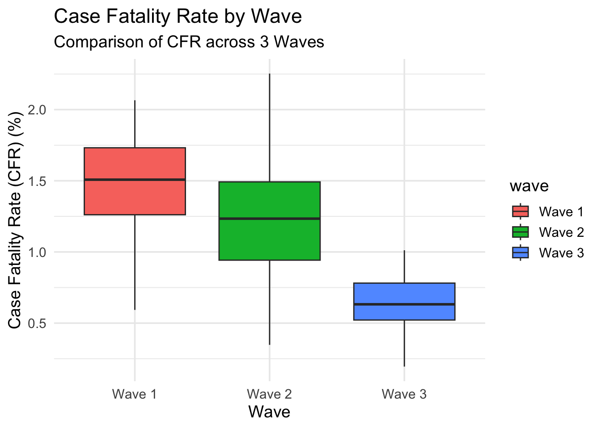
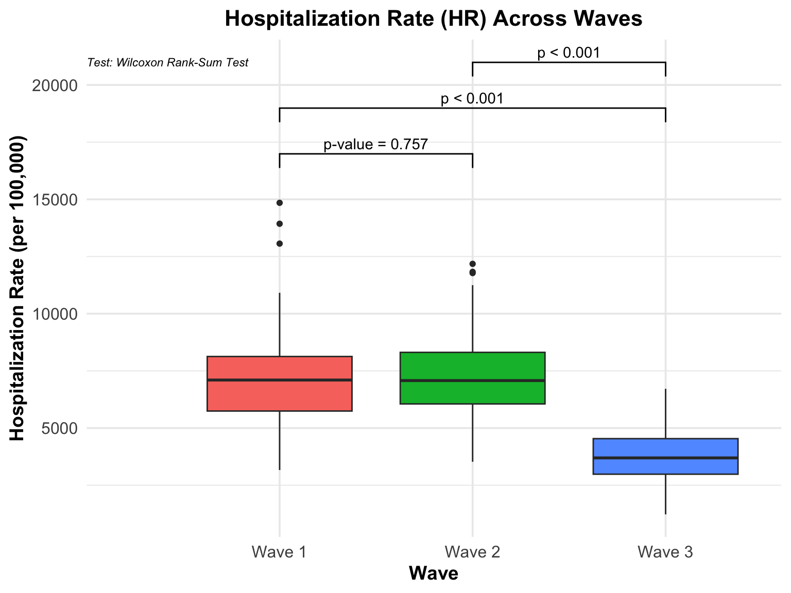
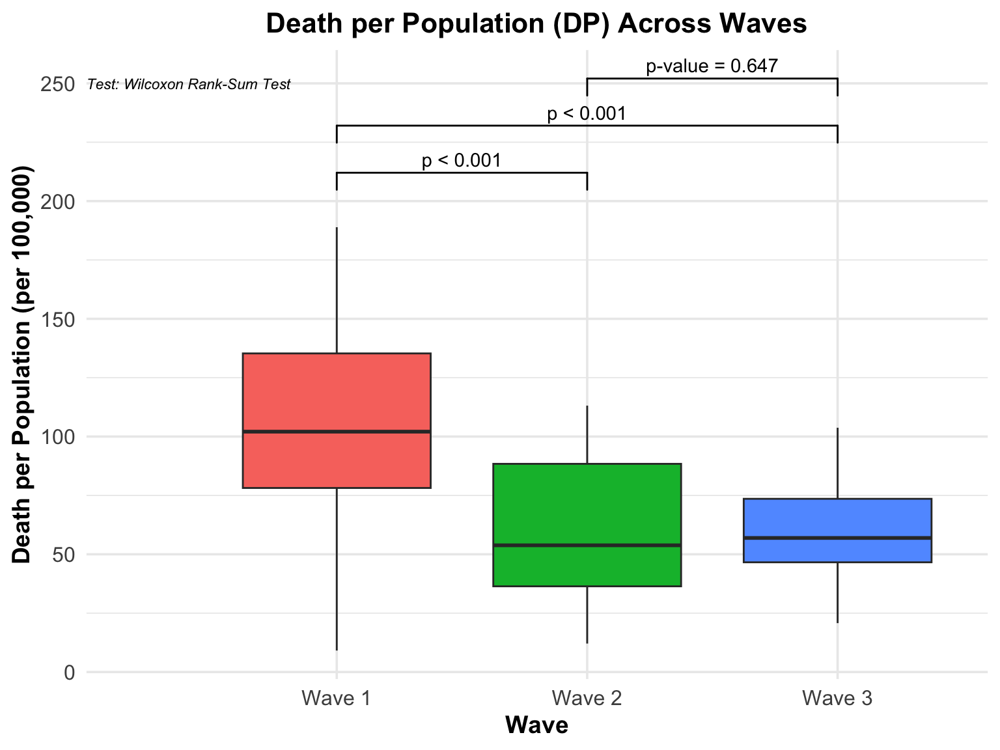

BST 260 Final Project - COVID-19 Data
Introduction
The COVID-19 pandemic, first reported in Wuhan in late 2019, is a respiratory disease caused by the severe acute respiratory syndrome coronavirus 2 (SARS-Cov-2) (Shi et al. 2020; Covid and Team 2021). The SAR-Cov-2 virus rapidly spread from China to the rest of the world in early 2020, and has constituted arguably the most severe global health crisis the 21st century has seen so far. Beyond its direct impact on human health, the outbreak of COVID-19 has exerted indelible influence on societies, economies, and the healthcare systems. In the early phase of the COVID-19 pandemic, it was known to cause irreversible pneumonia, high fever, and dry cough (Madabhavi, Sarkar, and Kadakol 2020). Silvestri et al. (2020) identified four stages of the early variants of the SARS-Cov-2 virus: upper respiratory infection, pneumonia, cytokine storm, and in the worse scenario, death (Stasi et al. 2020).
The rapid transmission of the COVID-19 virus was possibly due to its unique characteristic: asymptomatic transmission. Compared with coronaviruses identified previously such as the MERS-Cov, many of the COVID-19 infected patients did not show any symptoms when they first contracted the virus. However, they already became carriers, and the virus already started spreading from them through air, body fluid exchange, or aerosols (Gao et al. 2021). The asymptomatic transmission feature accelerated the wide spread of the COVID-19 virus, and at the same time hindered the containment efforts led by the healthcare agencies. What’s more, as the pandemic progressed and vaccines were developed, the SARS-Cov-2 virus exhibited a high rate of escape and mutation, leading to a variety of variants including alpha, beta, delta, and omicron. These variants showed differences in their transmissibility, virulence, and the ability to evade the immune system. Because of this, even vaccines, which used to be taken as the ultimate measure to end any pandemic, proved to fall short of people’s expectation in controlling this worldwise crisis (Vasireddy et al. 2021). As a result, the majority of the governments announced emergency measures ranging from mask mandates, social distancing, regular sterilization, and even full lock-down of cities (Koh 2020).
Globally, what the COVID-19 imposed was not merely a challenge in the field of public health, but also a multi-faceted catastrophe. For instance, restrictions on freight transport wreaked great havoc on international transactions and businesses. Consequently, the economic systems of countries around the globe were heavily struck, especially for those which rely greatly on exports. A cascade of its adverse effects was reflected by high rate of unemployment, corporation bankruptcy, disruptions to supply chains, and a switch in working/learning mode. To the healthcare system, COVID-19 meant extraordinary pressure on the infrastructures. Hospitals were often confronted with an overwhelming number of infected patients, while experiencing a lack of medical professionals also due to COVID-19 transmission.
Especially in the United States, the COVID-19 pandemic has been complicated and exacerbated by various factors (Omer, Malani, and Del Rio 2020; Covid and Team 2021). Given the high degree of autonomy of each state in the US, significant variations could be seen across states due to discrepancies in regional public health policies, demographics, and economic development. Previous studies have suggested that the ethnic minorities, middle- and low-income populations, and the rural communities were relatively more vulnerable to this emergency. These populations often suffer from pre-existing health inequities and consequently disproportional rates of mortality were reported (Alcendor 2020; Wilder 2021).
The US Centers for Disease Control and Prevention (CDC) provides an excellent platform for collecting and sharing COVID-19 related data. These data enable us to study the progression and impact of COVID-19 throughout the pandemic period. We can expect that different states might have responded differently: adopting distinct strategies for containment and mitigation. Additionally, as the COVID-19 virus mutated, multiple waves could be identified, which were driven by seasonal changes, vaccine effectiveness, and the fatality rate. Understanding these patterns is vital to assessing the evolution of the SARS-Cov-2 virus, regional differences, and the virulence over time.
In this project, we examined the COVID-19 data provided by the CDC COVID-19 Response, including COVID-19 cases, COVID-related deaths, and hospitalization from Jan 25th, 2020 to Nov 30th, 2024. Leveraging data analysis and visualization, this study aims to identify major waves of the COVID-19 pandemic in the US, and answer the following questions 1) which states generally responded to the pandemic better, 2) how the virulence of the SARS-Cov-2 virus evolved to understand the regional differences and seasonal changes in the transmissibility of the virus. In addition, we also seek to estimate the weekly excess mortality for each state during the pandemic period, and investigate whether the regional differences could be observed and whether COVID-19 was the driving factor. We hypothesize that states along the west and east coasts would generally have better performance during the pandemic due to stronger healthcare infrastructure. We also hypothesize that the COVID-19 virus became less virulent over time as typically viruses do not possess high virulence and high contagiousness.
Analyses
Q1: Pandemic period from Jan 2020 to Nov 2024
The figure below displays the COVID-19 cases, deaths, and hospitalization rate per 100,000 people in each region of the US from 2020 to 2024.
As can be seen from the trend plot which depicts the rates of COVID-19 cases, deaths, and hospitalizations from 01/25/2021 to 11/30/2024, there seems to be 3 waves of COVID-19 spread. The first one occurs from Oct 2020 to Apr 2021, where a peak in cases, deaths, and hospitalizations can be observed. Likewise, it appears that there was another wave between Jul 2021 to early Dec 2021. Lastly, there was a wave from early Dec 2021 to Apr 2022.
First Wave
This period marked the first significant rise in COVID-19 rates, with sharp increases across all metrics—cases, deaths, and hospitalizations. The wave coincides with the colder months when indoor gatherings increased and may also reflect the impact of delayed public health measures or variants circulating during this time. The peak of this wave aligns with the early rollout of vaccines, which likely contributed to its decline as more people gained access to immunization.
Second Wave
The summer and early winter of 2021 saw a resurgence in COVID-19 activity, driven largely by the spread of the Delta variant. This wave demonstrates a rapid increase in hospitalizations and deaths following the initial rise in cases. Despite vaccination efforts, breakthrough infections and the highly contagious nature of Delta played significant roles in this period. Public health measures such as mask mandates were reinstituted in some areas, but the surge continued through the fall.
Third Wave
The final and most intense wave depicted occurred during the winter of 2021-2022, fueled by the Omicron variant. While cases skyrocketed to unprecedented levels due to Omicron’s transmissibility, deaths and hospitalizations rose less dramatically than in previous waves, likely reflecting the variant’s comparatively milder effects and increased vaccination coverage. However, the healthcare system faced immense strain due to the sheer number of cases.
Q2: Deaths rate by state during each time period
From Oct 1st 2020 to Apr 1st 2021, overall this wave was arguably the most severe wave among all 3. The highest death rate per 100,000 people was reported in South Dakota (SD), with an average of 188.91 deaths among 100,000 people. Following South Dakota were North Dakota (177.97), Oklahoma (175.32), and Arkansas (150.17). There were also states which managed to contain the death rate below 50 per 100,000. For example, the lowest death rate was reported in Hawaii, which was only 9.12 deaths on average per 100,000 people, followed by Vermont (11.18), Alaska (26.48), Washington (39.58), Oregon (42.04), Puerto Rico (43.66), and Maine (47.19).
From July 1st 2021 to Dec 1st 2021, the COVID-19 variant seemed to be less virulent. The highest death rate per 100,000 people was reported in West Virginia (WV), with an average of 113.13 deaths among 100,000 people. Following West Virginia were Florida (111.62), Montana (111.30), and Wyoming (109.88). There were also states which managed to contain the death rate below 40 per 100,000. For example, the lowest death rate was reported in Washington D.C., which was only 12.09 deaths on average per 100,000 people, followed by Vermont (12.39), Connecticut (12.39), New York (17.04), and Hawaii (36.83).
For the third wave, the COVID-19 variant during the period seemed to grow more infectious and deadly. The highest death rate per 100,000 people was reported in West Virginia (WV) again, with an average of 103.73 deaths among 100,000 people. Following West Virginia were Ohio (102.05), New Mexico (96.78), and Kentucky (93.82). There were also states which managed to contain the death rate below 40 per 100,000. For example, the lowest death rate was reported in Hawaii, which was only 20.76 deaths on average per 100,000 people, followed by Alaska (27.69), Puerto Rico (28.21), Vermont (29.85), and Utah (33.22). Figures can be found in Supplementary Methods.
We also compared the performance of each state across all 3 waves by taking the average of their death rate per 100,000 people. Results show that Oklahoma had the highest average death rate per 100,000, amounting to 120.00 deaths per 100,000 people, followed by West Virginia (115.33), Mississippi (109), Kentucky (107.42), Tennessee (106.92). There were also states which kept a relatively low death rate across waves. Namely, Vermont had an average death rate of only 17.81 per 100,000. Similarly, Hawaii had an average of 22.24 per 100,000, followed by Puerto Rico (30.94) New York (37.10), and Washington (40.07).
Generally, it can be seen that states in the northeastern part or the west coast of the US performed better than those in the middle or west US. It can also be observed that less populated states such as Vermont and Washington had lower death rates. But exceptions are also evident, for New York is rather populated but it was among the states with the lowest average death rates.

Q3: COVID-19 became less or more virulent across different periods
To evaluate if COVID-19 became less or more virulent across different time periods, we will employ three key metrics: cases fatality rate (CFR), hospitalization rate (HR), and death per population (DP). The CFR is defined as deaths per case, HR is defined as hospitalizations per case, and DP is defined as deaths per population. In the following analyses, we will analyze these key metrics with tables and visualizations.
Cases fatality rate, hospitalization rate, and death per population
| Wave | Total Cases | Total Deaths | Total Hospitalization | Total Population | CFR | HR | DP |
|---|---|---|---|---|---|---|---|
| Wave 1 | 22,403,089 | 348,013 | 1,714,882 | 334,955,562 | 1,553.42 | 7,654.67 | 103.90 |
| Wave 2 | 14,304,772 | 194,568 | 1,122,040 | 335,157,329 | 1,360.16 | 7,843.82 | 58.05 |
| Wave 3 | 30,709,203 | 194,326 | 1,183,261 | 336,099,114 | 632.79 | 3,853.12 | 57.82 |
Wave 1
During Wave 1, the United States experienced a total of 22,403,089 cases, with 348,013 deaths and 1,714,882 hospitalizations. The total population during this period was 334,955,562. Key metrics calculated include:
- Case Fatality Rate (CFR): 1,553.42 per 100,000 cases.
- Hospitalization Rate (HR): 7,654.67 per 100,000 cases.
- Death Proportion (DP): 103.90 deaths per 100,000 population.
Wave 2
Wave 2 saw a decrease in total cases and deaths compared to Wave 1, with 14,304,772 cases, 194,568 deaths, and 1,122,040 hospitalizations. The total population for this wave was 335,157,329. Metrics for this wave include:
- Case Fatality Rate (CFR): 1,360.16 per 100,000 cases.
- Hospitalization Rate (HR): 7,843.82 per 100,000 cases.
- Death Proportion (DP): 58.05 deaths per 100,000 population.
Wave 3
Wave 3 reported the highest total cases at 30,709,203, but a similar total death count compared to Wave 2, with 194,326 deaths and 1,183,261 hospitalizations. The total population during this wave was 336,099,114. Metrics calculated for Wave 3 include:
- Case Fatality Rate (CFR): 632.79 per 100,000 cases.
- Hospitalization Rate (HR): 3,853.12 per 100,000 cases.
- Death Proportion (DP): 57.82 deaths per 100,000 population.
Total cases peaked in Wave 3, while total deaths and hospitalizations decreased relative to Wave 1. The Case Fatality Rate (CFR) showed a marked decline across waves, decreasing from 1,553.42 in Wave 1 to 632.79 in Wave 3. The Hospitalization Rate (HR) also declined significantly by Wave 3, from 7,654.67 in Wave 1 to 3,853.12 in Wave 3. Death Proportion (DP) decreased steadily across the waves, dropping from 103.90 in Wave 1 to 57.82 in Wave 3.
Q4: Estimate excess mortality for each week for each state. Check if excess mortality can be explained by COVID-19

| state_name | term | estimate | std.error | statistic | p.value | r.squared |
|---|---|---|---|---|---|---|
| Alabama | (Intercept) | 16.015 | 24.090 | 0.665 | 0.507 | 0.656 |
| Alabama | covid_deaths | 2.520 | 0.136 | 18.515 | 0.000 | 0.656 |
| Alaska | (Intercept) | 10.342 | 4.749 | 2.178 | 0.033 | 0.745 |
| Alaska | covid_deaths | 2.907 | 0.211 | 13.767 | 0.000 | 0.745 |
| Arizona | (Intercept) | 66.662 | 32.297 | 2.064 | 0.040 | 0.667 |
| Arizona | covid_deaths | 2.468 | 0.129 | 19.207 | 0.000 | 0.667 |
| Arkansas | (Intercept) | 50.810 | 17.269 | 2.942 | 0.004 | 0.521 |
| Arkansas | covid_deaths | 2.246 | 0.166 | 13.523 | 0.000 | 0.521 |
| California | (Intercept) | 124.611 | 122.045 | 1.021 | 0.309 | 0.683 |
| California | covid_deaths | 2.453 | 0.123 | 19.878 | 0.000 | 0.683 |
| Colorado | (Intercept) | 42.375 | 21.729 | 1.950 | 0.053 | 0.499 |
| Colorado | covid_deaths | 2.352 | 0.177 | 13.290 | 0.000 | 0.499 |
| Connecticut | (Intercept) | -26.603 | 17.044 | -1.561 | 0.121 | 0.671 |
| Connecticut | covid_deaths | 2.142 | 0.121 | 17.738 | 0.000 | 0.671 |
| Delaware | (Intercept) | 4.135 | 5.807 | 0.712 | 0.478 | 0.682 |
| Delaware | covid_deaths | 2.434 | 0.164 | 14.867 | 0.000 | 0.682 |
| District of Columbia | (Intercept) | 7.151 | 7.928 | 0.902 | 0.370 | 0.475 |
| District of Columbia | covid_deaths | 2.311 | 0.272 | 8.513 | 0.000 | 0.475 |
| Florida | (Intercept) | 66.037 | 84.759 | 0.779 | 0.437 | 0.631 |
| Florida | covid_deaths | 2.251 | 0.126 | 17.793 | 0.000 | 0.631 |
| Georgia | (Intercept) | 55.093 | 42.792 | 1.287 | 0.200 | 0.629 |
| Georgia | covid_deaths | 2.559 | 0.145 | 17.678 | 0.000 | 0.629 |
| Hawaii | (Intercept) | -3.694 | 6.379 | -0.579 | 0.564 | 0.577 |
| Hawaii | covid_deaths | 2.719 | 0.265 | 10.252 | 0.000 | 0.577 |
| Idaho | (Intercept) | 14.203 | 10.208 | 1.391 | 0.167 | 0.559 |
| Idaho | covid_deaths | 2.311 | 0.180 | 12.833 | 0.000 | 0.559 |
| Illinois | (Intercept) | -30.451 | 52.705 | -0.578 | 0.564 | 0.552 |
| Illinois | covid_deaths | 2.538 | 0.169 | 15.045 | 0.000 | 0.552 |
| Indiana | (Intercept) | -54.247 | 33.394 | -1.624 | 0.106 | 0.568 |
| Indiana | covid_deaths | 2.509 | 0.160 | 15.650 | 0.000 | 0.568 |
| Iowa | (Intercept) | -20.996 | 17.459 | -1.203 | 0.231 | 0.492 |
| Iowa | covid_deaths | 2.228 | 0.177 | 12.608 | 0.000 | 0.492 |
| Kansas | (Intercept) | 6.016 | 16.337 | 0.368 | 0.713 | 0.544 |
| Kansas | covid_deaths | 2.440 | 0.178 | 13.728 | 0.000 | 0.544 |
| Kentucky | (Intercept) | -4.659 | 26.144 | -0.178 | 0.859 | 0.521 |
| Kentucky | covid_deaths | 2.417 | 0.171 | 14.096 | 0.000 | 0.521 |
| Louisiana | (Intercept) | 12.740 | 22.704 | 0.561 | 0.575 | 0.612 |
| Louisiana | covid_deaths | 2.539 | 0.154 | 16.459 | 0.000 | 0.612 |
| Maine | (Intercept) | 24.393 | 13.605 | 1.793 | 0.076 | 0.238 |
| Maine | covid_deaths | 2.596 | 0.437 | 5.943 | 0.000 | 0.238 |
| Maryland | (Intercept) | -92.502 | 24.689 | -3.747 | 0.000 | 0.558 |
| Maryland | covid_deaths | 2.600 | 0.173 | 15.036 | 0.000 | 0.558 |
| Massachusetts | (Intercept) | -80.090 | 27.111 | -2.954 | 0.004 | 0.660 |
| Massachusetts | covid_deaths | 2.225 | 0.121 | 18.426 | 0.000 | 0.660 |
| Michigan | (Intercept) | -75.675 | 47.842 | -1.582 | 0.115 | 0.601 |
| Michigan | covid_deaths | 2.659 | 0.161 | 16.546 | 0.000 | 0.601 |
| Minnesota | (Intercept) | -31.590 | 23.156 | -1.364 | 0.174 | 0.471 |
| Minnesota | covid_deaths | 2.393 | 0.190 | 12.584 | 0.000 | 0.471 |
| Mississippi | (Intercept) | 8.756 | 16.797 | 0.521 | 0.603 | 0.635 |
| Mississippi | covid_deaths | 2.481 | 0.142 | 17.435 | 0.000 | 0.635 |
| Missouri | (Intercept) | -44.197 | 33.234 | -1.330 | 0.185 | 0.534 |
| Missouri | covid_deaths | 2.536 | 0.178 | 14.231 | 0.000 | 0.534 |
| Montana | (Intercept) | 11.332 | 4.937 | 2.295 | 0.024 | 0.835 |
| Montana | covid_deaths | 2.410 | 0.106 | 22.641 | 0.000 | 0.835 |
| Nebraska | (Intercept) | -0.944 | 10.989 | -0.086 | 0.932 | 0.503 |
| Nebraska | covid_deaths | 2.364 | 0.198 | 11.954 | 0.000 | 0.503 |
| Nevada | (Intercept) | 4.124 | 15.928 | 0.259 | 0.796 | 0.560 |
| Nevada | covid_deaths | 2.351 | 0.160 | 14.724 | 0.000 | 0.560 |
| New Hampshire | (Intercept) | 12.934 | 12.054 | 1.073 | 0.286 | 0.236 |
| New Hampshire | covid_deaths | 2.150 | 0.382 | 5.621 | 0.000 | 0.236 |
| New Jersey | (Intercept) | -192.886 | 32.751 | -5.889 | 0.000 | 0.851 |
| New Jersey | covid_deaths | 2.630 | 0.082 | 32.217 | 0.000 | 0.851 |
| New Mexico | (Intercept) | 24.966 | 12.325 | 2.026 | 0.044 | 0.576 |
| New Mexico | covid_deaths | 2.330 | 0.158 | 14.784 | 0.000 | 0.576 |
| New York | (Intercept) | -75.879 | 46.889 | -1.618 | 0.107 | 0.692 |
| New York | covid_deaths | 2.433 | 0.120 | 20.199 | 0.000 | 0.692 |
| North Carolina | (Intercept) | 24.244 | 46.224 | 0.524 | 0.601 | 0.526 |
| North Carolina | covid_deaths | 2.503 | 0.176 | 14.239 | 0.000 | 0.526 |
| North Dakota | (Intercept) | -6.396 | 4.148 | -1.542 | 0.127 | 0.849 |
| North Dakota | covid_deaths | 2.026 | 0.093 | 21.759 | 0.000 | 0.849 |
| Ohio | (Intercept) | -232.900 | 63.633 | -3.660 | 0.000 | 0.598 |
| Ohio | covid_deaths | 2.615 | 0.158 | 16.575 | 0.000 | 0.598 |
| Oklahoma | (Intercept) | -13.884 | 20.507 | -0.677 | 0.499 | 0.642 |
| Oklahoma | covid_deaths | 2.356 | 0.132 | 17.811 | 0.000 | 0.642 |
| Oregon | (Intercept) | 77.838 | 22.253 | 3.498 | 0.001 | 0.301 |
| Oregon | covid_deaths | 2.692 | 0.311 | 8.655 | 0.000 | 0.301 |
| Pennsylvania | (Intercept) | -180.602 | 66.304 | -2.724 | 0.007 | 0.589 |
| Pennsylvania | covid_deaths | 2.560 | 0.157 | 16.319 | 0.000 | 0.589 |
| Puerto Rico | (Intercept) | 61.637 | 18.592 | 3.315 | 0.001 | 0.194 |
| Puerto Rico | covid_deaths | 2.378 | 0.384 | 6.195 | 0.000 | 0.194 |
| Rhode Island | (Intercept) | 6.376 | 9.703 | 0.657 | 0.513 | 0.447 |
| Rhode Island | covid_deaths | 1.784 | 0.198 | 9.027 | 0.000 | 0.447 |
| South Carolina | (Intercept) | 62.602 | 24.499 | 2.555 | 0.011 | 0.581 |
| South Carolina | covid_deaths | 2.352 | 0.148 | 15.931 | 0.000 | 0.581 |
| South Dakota | (Intercept) | -3.886 | 4.347 | -0.894 | 0.374 | 0.857 |
| South Dakota | covid_deaths | 2.176 | 0.091 | 23.974 | 0.000 | 0.857 |
| Tennessee | (Intercept) | -12.193 | 34.120 | -0.357 | 0.721 | 0.626 |
| Tennessee | covid_deaths | 2.478 | 0.141 | 17.553 | 0.000 | 0.626 |
| Texas | (Intercept) | 141.292 | 90.272 | 1.565 | 0.119 | 0.713 |
| Texas | covid_deaths | 2.298 | 0.107 | 21.424 | 0.000 | 0.713 |
| Utah | (Intercept) | 27.348 | 13.171 | 2.076 | 0.040 | 0.388 |
| Utah | covid_deaths | 2.334 | 0.250 | 9.320 | 0.000 | 0.388 |
| Vermont | (Intercept) | 14.422 | 3.972 | 3.631 | 0.001 | 0.507 |
| Vermont | covid_deaths | 3.512 | 0.427 | 8.232 | 0.000 | 0.507 |
| Virginia | (Intercept) | 32.897 | 35.446 | 0.928 | 0.355 | 0.462 |
| Virginia | covid_deaths | 2.584 | 0.206 | 12.545 | 0.000 | 0.462 |
| Washington | (Intercept) | 50.657 | 33.487 | 1.513 | 0.132 | 0.257 |
| Washington | covid_deaths | 2.550 | 0.319 | 8.000 | 0.000 | 0.257 |
| West Virginia | (Intercept) | 21.232 | 15.280 | 1.390 | 0.167 | 0.493 |
| West Virginia | covid_deaths | 2.564 | 0.211 | 12.145 | 0.000 | 0.493 |
| Wisconsin | (Intercept) | -42.048 | 27.464 | -1.531 | 0.128 | 0.527 |
| Wisconsin | covid_deaths | 2.594 | 0.186 | 13.935 | 0.000 | 0.527 |
| Wyoming | (Intercept) | -1.791 | 4.104 | -0.436 | 0.664 | 0.757 |
| Wyoming | covid_deaths | 2.458 | 0.163 | 15.086 | 0.000 | 0.757 |
We are first using 2015-2019 US mortality data grouped by states to estimate the 2020-2023 mortality by all causes (not limited to deaths caused by Covid-19). Then we calculate excess mortality by subtracting the estimated deaths from observed deaths of 2020-2023. This is depicted as blue line in the plot. Now, we plot the deaths which the culprit is Covid-19 via red line to see whether the excess mortality is well explained by Covid-19. We can see that in most of the states, COVId-19 is indeed the main culprit of excess mortality from 2020-2023. However, some states such as New Hampshire, Oregon, Puerto Rico, and Washington do not have a similar trend of lines between COVID-19 deaths and Excess deaths, meaning COVID-19 does not explain the excess mortality that well.
Second, we conducted additional analysis of fitting the linear model with COVID-19 deaths being the covariate and excess deaths being the outcome variable. The results of the model advocated the findings that we have roughly found from the plot. The R-squared values of each state’s model showed that New Hampshire(0.236), Oregon(0.301), Puerto Rico(0.194), and Washington(0.257)’s respective R-squared values were all low compared to other states. Some states such as New Jersey, North Dakota, and South Dakota showed very high R-squared values of 0.851, 0.849, and 0.857 respectively which corresponded to the alignment of Covid caused deaths and excess deaths in the plot.
Overall, we can conclude that COVID-19 fairly explains the excess mortality in the United States during 2020-2023 well!
Q5. For each period compute the excess mortality rates by state. Describe which states did better or worse during the different periods.

| state_name | total_excess_deaths | population | excess_death_rate | Wave | wave | rank |
|---|---|---|---|---|---|---|
| South Dakota | 16419.314 | 908473.0 | 1807.353 | Wave 1 | Wave 1 | 1 |
| Mississippi | 51633.512 | 2943234.4 | 1754.312 | Wave 1 | Wave 1 | 2 |
| Oklahoma | 70164.746 | 4020841.8 | 1745.026 | Wave 1 | Wave 1 | 3 |
| Arkansas | 52176.618 | 3047415.4 | 1712.160 | Wave 1 | Wave 1 | 4 |
| New Mexico | 35110.491 | 2114723.2 | 1660.288 | Wave 1 | Wave 1 | 5 |
| Hawaii | 1447.598 | 1439376.6 | 100.571 | Wave 1 | Wave 1 | 52 |
| Washington | 34028.332 | 7780112.0 | 437.376 | Wave 1 | Wave 1 | 51 |
| New Hampshire | 6775.909 | 1396105.8 | 485.344 | Wave 1 | Wave 1 | 50 |
| Maine | 6793.006 | 1385767.6 | 490.198 | Wave 1 | Wave 1 | 49 |
| Massachusetts | 37083.374 | 6994548.2 | 530.175 | Wave 1 | Wave 1 | 48 |
| West Virginia | 29595.602 | 1775810.4 | 1666.597 | Wave 2 | Wave 2 | 1 |
| Alaska | 11892.841 | 733124.0 | 1622.214 | Wave 2 | Wave 2 | 2 |
| Montana | 17743.049 | 1119461.6 | 1584.963 | Wave 2 | Wave 2 | 3 |
| Wyoming | 8220.787 | 581598.8 | 1413.481 | Wave 2 | Wave 2 | 4 |
| Mississippi | 41573.242 | 2943234.4 | 1412.502 | Wave 2 | Wave 2 | 5 |
| New Jersey | 13175.832 | 9275981.8 | 142.042 | Wave 2 | Wave 2 | 52 |
| Massachusetts | 11776.964 | 6994548.2 | 168.373 | Wave 2 | Wave 2 | 51 |
| Maryland | 11487.566 | 6171589.2 | 186.136 | Wave 2 | Wave 2 | 50 |
| Connecticut | 8306.713 | 3610627.6 | 230.063 | Wave 2 | Wave 2 | 49 |
| New York | 50117.643 | 19713122.4 | 254.235 | Wave 2 | Wave 2 | 48 |
| West Virginia | 22867.470 | 1775810.4 | 1287.720 | Wave 3 | Wave 3 | 1 |
| New Mexico | 23042.651 | 2114723.2 | 1089.630 | Wave 3 | Wave 3 | 2 |
| Oklahoma | 41694.305 | 4020841.8 | 1036.955 | Wave 3 | Wave 3 | 3 |
| Kentucky | 45350.159 | 4516205.0 | 1004.165 | Wave 3 | Wave 3 | 4 |
| Arizona | 70906.708 | 7355304.6 | 964.021 | Wave 3 | Wave 3 | 5 |
| Hawaii | 4758.577 | 1439376.6 | 330.600 | Wave 3 | Wave 3 | 52 |
| New York | 66754.672 | 19713122.4 | 338.631 | Wave 3 | Wave 3 | 51 |
| Utah | 13825.447 | 3377227.8 | 409.373 | Wave 3 | Wave 3 | 50 |
| Massachusetts | 29029.613 | 6994548.2 | 415.032 | Wave 3 | Wave 3 | 49 |
| Washington | 36644.443 | 7780112.0 | 471.001 | Wave 3 | Wave 3 | 48 |
Wave 1 (Oct 1, 2020 – Apr 1, 2021):
Highest Excess Mortality Rates: South Dakota, Mississippi, Oklahoma, Arkansas, New Mexico
Lowest Excess Mortality Rates: Hawaii, Washington, New Hampshire, Maine, Massachusetts
Wave 2 (Jul 1, 2021 – Dec 1, 2021):
Highest Excess Mortality Rates: West Virginia, Alaska, Montana, Wyoming, Mississippi
Lowest Excess Mortality Rates: New Jersey, Massachusetts, Maryland, Connecticut, New York
Wave 3 (Dec 2, 2021 – Apr 1, 2022):
Highest Excess Mortality Rates: West Virginia, New Mexico, Oklahoma, Kentucky, Arizona
Lowest Excess Mortality Rates: Hawaii, New York, Utah, Massachusetts, Washington
Throughout the pandemic, certain states consistently experienced higher excess mortality rates, notably Oklahoma, Mississippi, and West Virginia. These states faced unique challenges, including lower vaccination uptake, limited access to healthcare in rural areas, and delayed or less stringent public health measures. Additionally, a higher prevalence of pre-existing health conditions such as obesity, diabetes, and cardiovascular diseases likely exacerbated the impact of COVID-19. These structural and behavioral factors contributed to their frequent appearance among the states with the highest excess mortality across all waves.
In contrast, states like Hawaii, Washington, and Massachusetts consistently ranked among those with the lowest excess mortality rates. These states benefitted from strong healthcare systems, better access to medical resources, and early implementation of comprehensive public health strategies. High vaccination rates, coupled with effective public policies and greater compliance with mitigation measures, played a critical role in reducing mortality. These factors highlight how proactive and sustained public health interventions can mitigate the toll of the pandemic, even in the face of widespread challenges.
The availability and uptake of vaccines emerged as a decisive factor influencing trends in excess mortality over time. States that prioritized vaccine distribution and achieved higher coverage witnessed declining excess mortality rates in later waves. Conversely, states slower to adopt widespread vaccination or preventive measures often struggled to control mortality rates. These findings underscore the vital role of public health policies and vaccination in shaping outcomes during a public health crisis, emphasizing the importance of equitable and efficient health resource allocation to protect vulnerable populations.
Supplementary Methods
Death rate of each state (3 waves)


Pair-wise comparison of the CFR, HR, and DP using statistical tests



References
Alcendor, Donald J. 2020. “Racial Disparities-Associated COVID-19 Mortality Among Minority Populations in the US.” Journal of Clinical Medicine 9 (8): 2442.
Covid, IHME, and Forecasting Team. 2021. “Modeling COVID-19 Scenarios for the United States.” Nature Medicine 27 (1): 94.
Gao, Zhiru, Yinghui Xu, Chao Sun, Xu Wang, Ye Guo, Shi Qiu, and Kewei Ma. 2021. “A Systematic Review of Asymptomatic Infections with COVID-19.” Journal of Microbiology, Immunology and Infection 54 (1): 12–16.
Koh, David. 2020. “COVID-19 Lockdowns Throughout the World.” Occupational Medicine 70 (5): 322–22.
Madabhavi, Irappa, Malay Sarkar, and Nagaveni Kadakol. 2020. “COVID-19: A Review.” Monaldi Archives for Chest Disease 90 (2).
Omer, Saad B, Preeti Malani, and Carlos Del Rio. 2020. “The COVID-19 Pandemic in the US: A Clinical Update.” Jama 323 (18): 1767–68.
Shi, Yu, Gang Wang, Xiao-peng Cai, Jing-wen Deng, Lin Zheng, Hai-hong Zhu, Min Zheng, Bo Yang, and Zhi Chen. 2020. “An Overview of COVID-19.” Journal of Zhejiang University-SCIENCE B 21 (May): 343–60. https://doi.org/10.1631/jzus.b2000083.
Stasi, Cristina, Silvia Fallani, Fabio Voller, and Caterina Silvestri. 2020. “Treatment for COVID-19: An Overview.” European Journal of Pharmacology 889: 173644.
Vasireddy, Deepa, Rachana Vanaparthy, Gisha Mohan, Srikrishna Varun Malayala, and Paavani Atluri. 2021. “Review of COVID-19 Variants and COVID-19 Vaccine Efficacy: What the Clinician Should Know?” Journal of Clinical Medicine Research 13 (6): 317.
Wilder, Julius M. 2021. “The Disproportionate Impact of COVID-19 on Racial and Ethnic Minorities in the United States.” Clinical Infectious Diseases. Oxford University Press US.